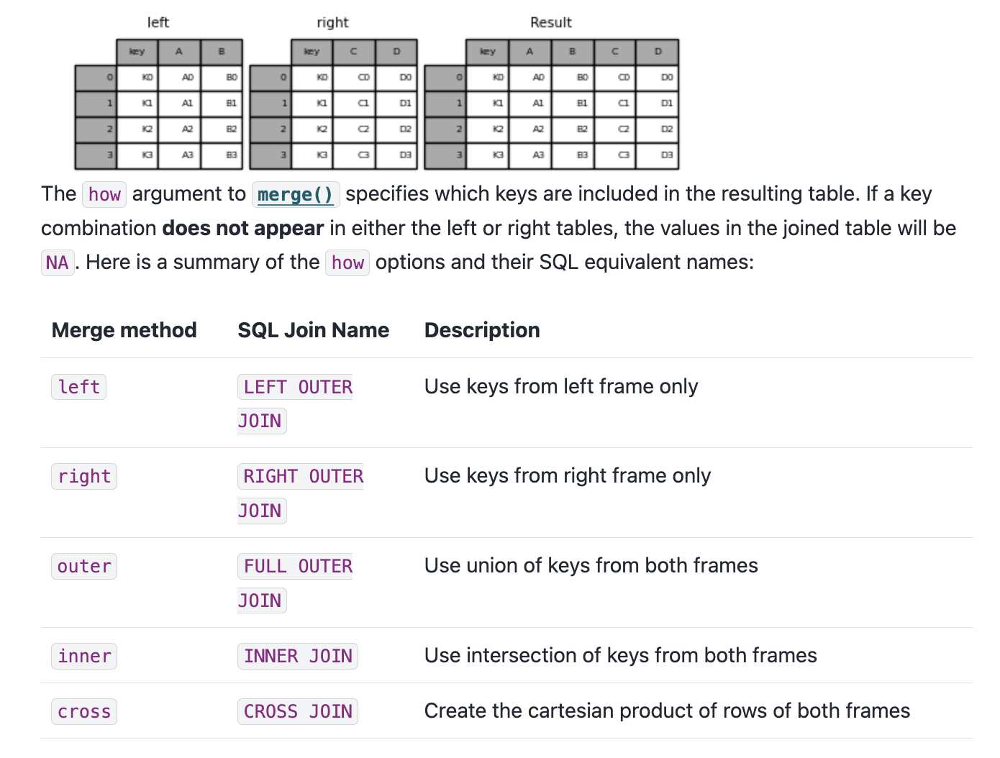
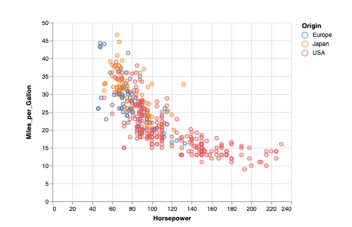
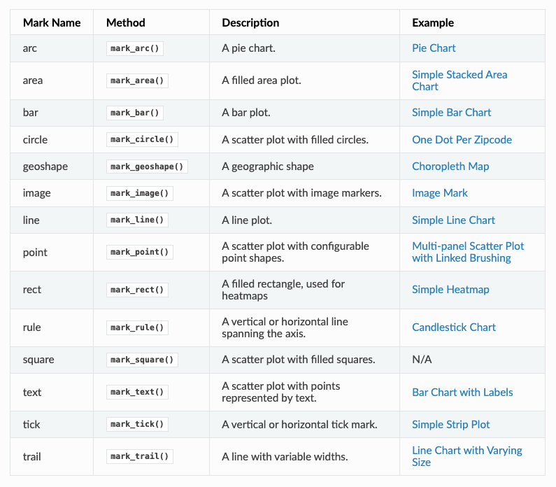
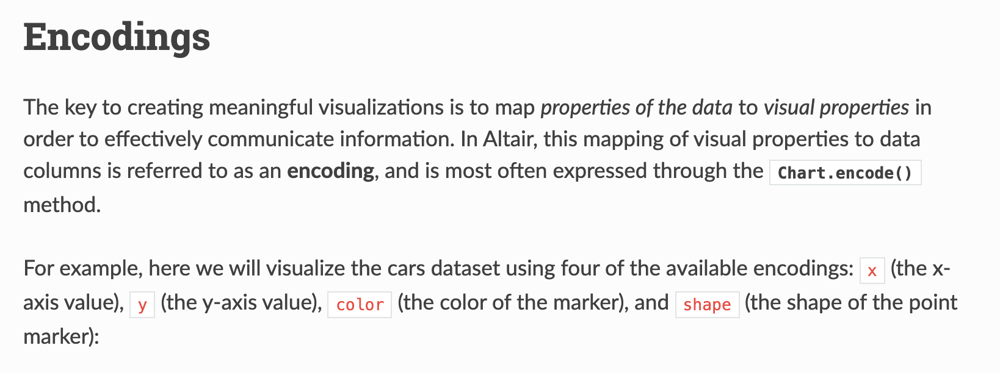
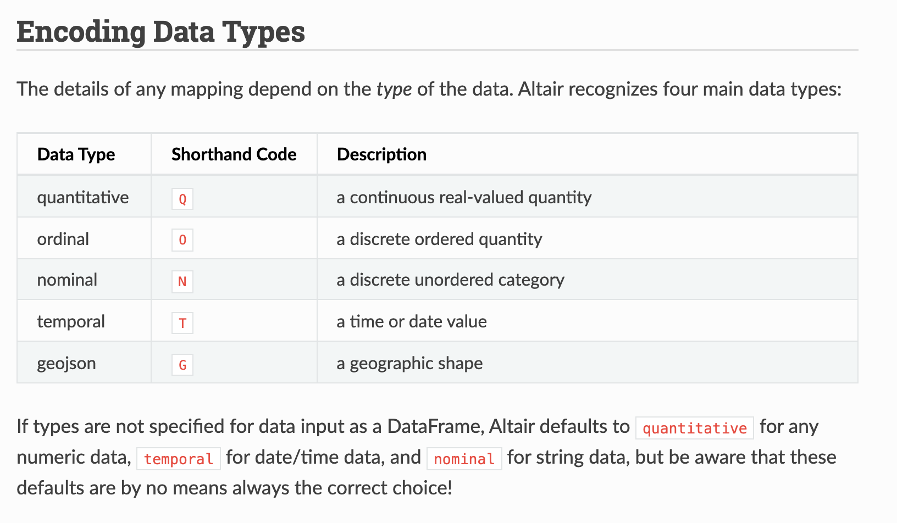
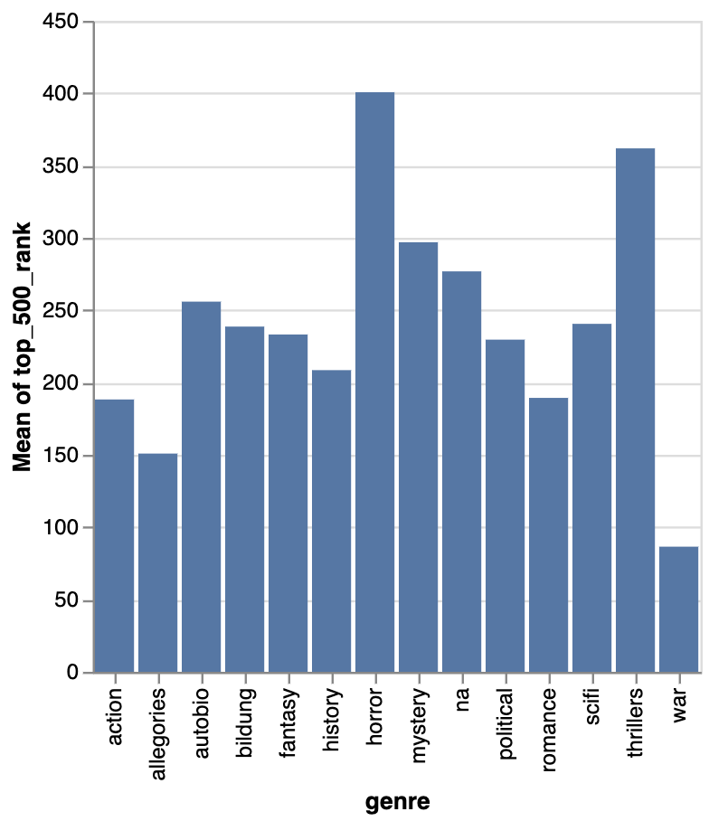
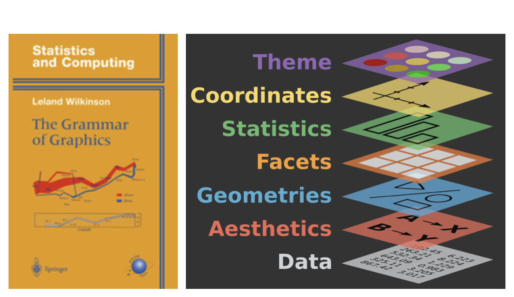
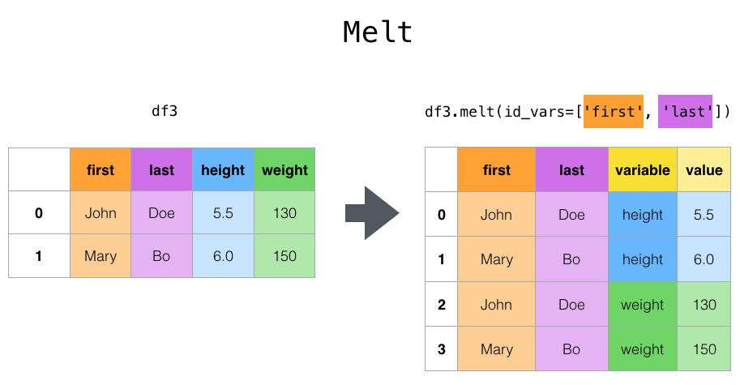
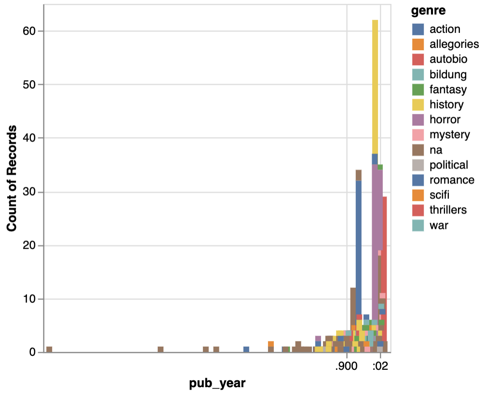

import pandas as pd
import altair as alt
melted_df = pd.melt(
combined_novels_nyt_df,
id_vars=['title', 'author', 'pub_year', 'genre'],
value_vars=['he_counts', 'she_counts', 'they_counts'],
var_name='pronoun',
value_name='pronoun_count'
).assign(pronoun=lambda df: df['pronoun'].str.replace('_count', ''))
selection = alt.selection_point(fields=['pronoun'], bind='legend')
alt.Chart(melted_df[melted_df['genre'].notna()]).mark_bar().encode(
x=alt.X('genre:N', title='Genre', sort='-y'),
y=alt.Y('sum(pronoun_count):Q', title='Total Pronoun Count'),
color=alt.Color('pronoun:N', title='Pronoun'),
opacity=alt.condition(selection, alt.value(1), alt.value(0.2)),
tooltip=[
alt.Tooltip('genre:N', title='Genre'),
alt.Tooltip('pronoun:N', title='Pronoun'),
alt.Tooltip('sum(pronoun_count):Q', title='Count', format=',')
]
).add_params(selection).properties(
title='Pronoun Counts by Genre',
width=600,
height=400
)EDA & Data Visualization
In our last lesson, we tried to answer the following questions:
- What is the average number of visits for each state?
- What is the average number of visits for each National Park?
- How many National Parks are there in each state?
Here’s my solutions to these questions:
# Load libraries
import re
import pandas as pd
# Load the data
parks_data_df = pd.read_csv('https://raw.githubusercontent.com/melaniewalsh/responsible-datasets-in-context/main/datasets/national-parks/US-National-Parks_RecreationVisits_1979-2023.csv') # or use the local path pd.read_csv('US-National-Parks_RecreationVisits_1979-2023.csv')
# Function to split on uppercase letters and insert underscores
def split_on_uppercase(name):
return re.sub(r'(?<!^)(?=[A-Z])', '_', name).lower()
# Apply the function to each column name
new_column_names = [split_on_uppercase(col) for col in parks_data_df.columns]
parks_data_df.columns = new_column_names
# 1. What is the average number of visits for each state?
print(parks_data_df.groupby(['state'])['recreation_visits'].mean().reset_index())
# 2. What is the average number of visits for each National Park?
print(parks_data_df.groupby(['park_name'])['recreation_visits'].mean().reset_index())
# 3. How many National Parks are there in each state?
print(parks_data_df.groupby(['state'])['park_name'].nunique().reset_index())We could store each of these in new variables but we also want to visualize this data to help us better understand it. That’s what we’ll be exploring further in this next lesson.
Rather than working with just the National Parks Data, we can also start to explore the remainder of the datasets from the Responsible Datasets in Context Project. For example, let’s take a look at the “Top 500 Greatest Novels” dataset by Anna Preus and Aashna Sheth https://www.responsible-datasets-in-context.com/posts/top-500-novels/top-500-novels.html.
First, we need to create a new Jupyter notebook in our pandas-eda folder called Top500NovelsEDA.ipynb and then load in the data. As a reminder, how can we read data in Pandas?

While this cat is adorable, we can also use the pd.read_csv() method to read in our data.
# Import data
novels_df = pd.read_csv("https://raw.githubusercontent.com/melaniewalsh/responsible-datasets-in-context/main/datasets/top-500-novels/final_merged_dataset_no_full_text.tsv", sep="\t")Notice that I am adding an argument to the read_csv() method: sep="\t". This tells Pandas to expect a tab-separated values file.
If we did not include this argument, we would likely see the following error in our Notebook:
ParserError: Error tokenizing data. C error: Expected 1 fields in line 163, saw 3This error is telling us that there is an issue with the way the data is formatted. In this case, the dataset is actually a tab-separated values (TSV) file, which means that we need to specify the sep parameter when we read it in. Encoding errors are common when working with data, especially data that was produced by others. The reason for this is that different operating systems and software use different character encodings to represent text. When we save a file, it is encoded in a specific way, and when we open it, we need to know how it was encoded in order to read it correctly.

ISO-8859-1 and utf-8 are both character encodings used to represent text in computers. ISO-8859-1, also known as Latin-1, is a single-byte encoding that can represent the first 256 Unicode characters but only covers Western European languages. On the other hand, utf-8 is far more popular because it is a variable-width character encoding that can encode all possible Unicode characters.
In our case, we didn’t need to specify the encoding, but if we did, we could have added the encoding parameter to our read_csv() method.
# Import data
novels_df = pd.read_csv("https://raw.githubusercontent.com/melaniewalsh/responsible-datasets-in-context/main/datasets/top-500-novels/final_merged_dataset_no_full_text.tsv", sep="\t", encoding='utf-8')Now we can start to explore this dataset. What methods could we use to get a sense of the data?

There’s many answers to this question, but say we use novels_df.info(). We would see the following output:
<class 'pandas.core.frame.DataFrame'>
RangeIndex: 500 entries, 0 to 499
Data columns (total 29 columns):
# Column Non-Null Count Dtype
--- ------ -------------- -----
0 top_500_rank 500 non-null int64
1 title 500 non-null object
2 author 500 non-null object
3 pub_year 500 non-null int64
4 orig_lang 500 non-null object
5 genre 500 non-null object
6 author_birth 499 non-null object
7 author_death 496 non-null object
8 author_gender 499 non-null object
9 author_primary_lang 499 non-null object
10 author_nationality 499 non-null object
11 author_field_of_activity 329 non-null object
12 author_occupation 458 non-null object
13 oclc_holdings 495 non-null float64
14 oclc_eholdings 495 non-null float64
15 oclc_total_editions 495 non-null float64
16 oclc_holdings_rank 495 non-null float64
17 oclc_editions_rank 495 non-null float64
18 gr_avg_rating 500 non-null float64
19 gr_num_ratings 500 non-null object
20 gr_num_reviews 500 non-null object
21 gr_avg_rating_rank 500 non-null int64
22 gr_num_ratings_rank 500 non-null int64
23 oclc_owi 495 non-null float64
24 author_viaf 500 non-null object
25 gr_url 480 non-null object
26 wiki_url 500 non-null object
27 pg_eng_url 500 non-null object
28 pg_orig_url 64 non-null object
dtypes: float64(7), int64(4), object(18)
memory usage: 113.4+ KBThis overview is telling us that we have far more columns in this datasets, each column’s name and data type, and specifically the number of non-null values in each column.
Missing Data in Pandas
In the last lesson, we covered how we could add null values to a DataFrame, but now we want to explore how we can work with them. Pandas has a lot of documentation for handling missing data that you can read here https://pandas.pydata.org/docs/user_guide/missing_data.html. For our purposes, we’re mostly concerned with the isna() and notna() methods.
While most of the columns have 500 non-null values, we can see that some of the columns have missing values. For example, author_field_of_activity has 329 non-null values, which means that there are 171 missing values. We can start to get a sense of what that column contains if we return to the dataset documentation, specifically the section “What’s in the Data” https://www.responsible-datasets-in-context.com/posts/top-500-novels/top-500-novels.html?tab=data-essay#whats-in-the-data. From there we can learn the following about this column:
AUTHOR_FIELD_OF_ACTIVITY: Author’s primary fields of activity, according to VIAF. VIAF includes data from multiple global partner institutions, but we only collect VIAF data associated with the Library of Congress (LOC).

For those unfamiliar, VIAF stands for the Virtual International Authority File, which is a service that provides a way to link and share information about authors and their works across different libraries and institutions. The idea for VIAF originated in 1998 as an experiment in trying to link authority records. As a reminder, authority records are standardized records that provide information about a specific entity, such as an author or a work, like MARC records. VIAF was officially launched in 2003 and is operated by the Online Computer Library Center (OCLC) in partnership with various national libraries and institutions.

The impetus for the creation of VIAF was not just sharing information, but what LIS scholar Christine L. Borgman calls the “scaling problem in name disambiguation” in her book Big Data, Little Data, No Data: Scholarship in the Networked World. We’ve already talked about this briefly in discussing the challenges of “cleaning data”, but the rise of multiple digital libraries and archives has made it increasingly difficult to accurately identify and attribute works to their correct authors, which is where projects like VIAF come in. However, as we discussed in class, there are still challenges with this system. For example, authors are not the ones who enter data into VIAF. Instead, it is often librarians or archivists who are responsible for creating and maintaining these records. This means that there can be discrepancies in how authors are represented, and it can be difficult to ensure that all works by a particular author are accurately attributed to them.
Now knowing this background, we can start to explore which authors have missing values in this column. We can do this by using the isna() method to check for missing values in the author_field_of_activity column.
novels_df[novels_df['author_field_of_activity'].isna()]Here we are using the isna() method to filter our DataFrame to only show rows where the author_field_of_activity column is null. If we wanted to see only rows where the column is not null, we could use the notna() method instead.
novels_df[novels_df['author_field_of_activity'].notna()]This will give us a DataFrame with all the authors who have a field of activity listed. We could also use the ~ operator to negate the boolean values returned by isna().
novels_df[~novels_df['author_field_of_activity'].isna()]We haven’t seen the ~ operator before, but it is a common way to negate boolean values in Python. So for example, if we had a boolean variable x that was True, then ~x would be False. In addition, Pandas also has isnull() and notnull() methods that can be used interchangeably with isna() and notna().
Finally, if we wanted to get rid of all rows in the novels_df DataFrame that have missing values in the author_field_of_activity column, we could either use our filtering logic to assign the result to a new variable or we could use the dropna() method.
novels_df_cleaned = novels_df.dropna(subset=['author_field_of_activity'])dropna() is a powerful method that can be used to remove missing values from a DataFrame. The subset parameter allows us to specify which columns we want to check for missing values. If we don’t specify a subset, dropna() will remove any row that has a missing value in any column.
Here’s a quick overview of the most common methods for handling missing values in Pandas:
| Pandas Method for Missing Values | Description | Usage |
|---|---|---|
isna() |
Returns a boolean DataFrame indicating whether each value is missing (NaN) | Can be used to filter DataFrames, Series, GroupBy objects, etc. or to identify the amount of missing data (df.isna().sum()) |
notna() |
Returns a boolean DataFrame indicating whether each value is not missing | Used similar to isna() |
isnull() |
Alias for isna() |
Used interchangeably with isna() |
notnull() |
Alias for notna() |
Used interchangeably with notna() |
dropna() |
Removes missing values from a DataFrame or Series | Can be used to drop rows or columns with missing values |
fillna() |
Fills missing values with a specified value or method | Can be used to replace NaN values with a specific value or interpolate missing values |
Knowing how to work with missing data is important since we often have gaps when working with cultural datasets. Furthermore, it’s important to know that certain methods like groupby() will automatically ignore missing values, so we should always check the distribution of our data before we start analyzing it.
Merging Data With Pandas
Now that we are understanding how to work with missing data, we can also start to explore how to augment our dataset in various ways. One of the most common ways to do this is through merging datasets together.
We’ve already seen one approach pd.concat() that allows us to concatenate DataFrames (aka add them together), but now we want to focus on the merge() method.
First though we need another dataset to merge with our novels_df. We could take a look at sites like Kaggle to find more datasets, or more specific ones like the Post45 Data Collective, which “peer reviews and houses literary and cultural data from 1945 to the present” https://data.post45.org/.
While there’s a number of relevant datasets in the Post45 Data Collective, we could use the one about New York Times Hardcover Fiction Bestsellers, 1931–2020, created by Jordan Pruett https://data.post45.org/nyt-fiction-bestsellers-data/. According to the documentation, this dataset contains the following:
The New York Times Hardcover Fiction Bestsellers (1931–2020) contains three related datasets. The first dataset provides a tabular representation of the hardcover fiction bestseller list of The New York Times every week between 1931 and 2020. The second dataset provides title-level data for every unique title that appeared on the hardcover fiction bestseller list during this time period. The third dataset provides HathiTrust Digital Library identifiers for every unique title that appeared on the hardcover fiction bestseller list and that also has a corresponding volume in the HathiTrust Digital Library.
Previous research using similar data has been limited to partial segments of the list, such as the top 200 longest-running bestsellers since a certain date (Piper and Portelance, 2016) or bestsellers from only particular years (Sorenson, 2007). By contrast, this dataset covers the full list since its inception in 1931, along with each reported work’s title, author(s), date of appearance, and rank.
Getting this additional dataset will allow us to explore the relationship between the New York Times bestsellers and the top 500 novels as recorded by OCLC.

If we click on the Explore/download data for the first dataset, we see a new page that has the remote url for the dataset: https://raw.githubusercontent.com/ecds/post45-datasets/main/nyt_full.tsv.
Notice the raw.githubusercontent.com in the URL. This tells us that this is a raw file from a GitHub repository, which is a common way to share datasets, and we can even see the actual file here https://github.com/Post45-Data-Collective/data/tree/main/nyt_hardcover_fiction_bestsellers.
We can copy that and load it into a new DataFrame.
nyt_bestsellers_df = pd.read_csv("https://raw.githubusercontent.com/ecds/post45-datasets/main/nyt_full.tsv", sep="\t", encoding='utf-8')Now that we have both datasets loaded, we can start to explore them. Let’s take a look at the columns in the nyt_bestsellers_df.info() DataFrame.
Which gives us the following output:
<class 'pandas.core.frame.DataFrame'>
RangeIndex: 60386 entries, 0 to 60385
Data columns (total 6 columns):
# Column Non-Null Count Dtype
--- ------ -------------- -----
0 year 60386 non-null int64
1 week 60386 non-null object
2 rank 60386 non-null int64
3 title_id 60386 non-null int64
4 title 60386 non-null object
5 author 60376 non-null object
dtypes: int64(3), object(3)
memory usage: 2.8+ MBWe can see that this dataset has 60386 rows and 6 columns. The columns are year, week, rank, title_id, title, and author. We can also see that the author column has ten missing values, but that overall, this dataset has very few null values and is much larger than the novels_df DataFrame.
Now we can start to merge the two DataFrames together. We’ve mentioned merging datasets a bit when we discussed joining data in class and SQL, but now we want to dig into details. Often times when we’re working with datasets, we will have our data split into multiple csv files or have differently shaped datasets (i.e. some of them will have more rows or columns than other datasets). Pandas has built in functionality that let’s us merge together DataFrames so that we can perform analysis on the combined dataset, which you can read about in the very extensive documentation here https://pandas.pydata.org/docs/user_guide/merging.html.
While this documentation shows a number of ways to combined datasets (concat let’s you combine datasets by stacking them on top of each other, join let’s you combine datasets by joining them on a common index, and merge let’s you combine datasets by joining them on a common column), we will focus on the merge method.

If we take a look at the documentation, we see the syntax above, which shows us that in Pandas we use the merge() function to combine datasets. The merge() function takes in a number of parameters, but the most important ones are left, right, how, and on. The left and right parameters are the DataFrames we want to merge, the how parameter is the type of join we want to undertake, and the on parameter is the column we want to join the DataFrames on.
We can also see an example of how this works in the figure below.

You’ll notice that we can see a description of the types of how parameters we can use. These are the same types of joins that we discussed in class and in SQL. The how parameter can be set to left, right, outer, or inner. The left join will return all the rows from the left DataFrame and the matching rows from the right DataFrame. The right join will return all the rows from the right DataFrame and the matching rows from the left DataFrame. The outer join will return all the rows from the left DataFrame and the right DataFrame. The inner join will return only the rows that match in both DataFrames.

Now that we are starting to understand this logic, we can consider how we might merge our datasets. First, we can double check the columns in our novels_df and nyt_bestsellers_df DataFrames to see if there are any common columns we can use to merge them.
novels_df.columns, nyt_bestsellers_df.columnsThis gives us the following output:
(Index(['top_500_rank', 'title', 'author', 'pub_year', 'orig_lang', 'genre',
'author_birth', 'author_death', 'author_gender', 'author_primary_lang',
'author_nationality', 'author_field_of_activity', 'author_occupation',
'oclc_holdings', 'oclc_eholdings', 'oclc_total_editions',
'oclc_holdings_rank', 'oclc_editions_rank', 'gr_avg_rating',
'gr_num_ratings', 'gr_num_reviews', 'gr_avg_rating_rank',
'gr_num_ratings_rank', 'oclc_owi', 'author_viaf', 'gr_url', 'wiki_url',
'pg_eng_url', 'pg_orig_url'],
dtype='object'),
Index(['year', 'week', 'rank', 'title_id', 'title', 'author'], dtype='object'))We could eyeball the likely similar columns, but we can also use the intersection() method to find the common columns.
set(novels_df.columns).intersection(set(nyt_bestsellers_df.columns))This gives us the following output:
{'author', 'title'}intersection() is a built-in Python method that returns the common elements between two sets. set() is another built-in Python method that creates a set object, which is an unordered collection of unique elements (somewhat similar to tuples). Sets can be very useful when you want to find the unique elements in a list. In this case, we are using set() to convert the column names of both DataFrames into sets, and then using intersection() to find the common columns.
Now that we know we have two columns we can use to merge the DataFrames, we can start to do that. Let’s say we want to do a left join, which will return all the rows from the novels_df DataFrame and the matching rows from the nyt_bestsellers_df DataFrame.
merged_df = novels_df.merge(nyt_bestsellers_df, how='left', on=['author', 'title'])While this code should work, you’ll notice if you print out the merged_df DataFrame that while there are new columns from the nyt_bestsellers_df in our merged_df there only NaN values in those columns. Why is that?
To figure out where we went wrong, we need to check the values in the author and title columns in both DataFrames, and specifically see if any of them exist in both DataFrames. We can do this by using the isin() and nunique() method to get the unique values in each column.
shared_authors = novels_df[novels_df['author'].isin(nyt_bestsellers_df['author'])]['author'].nunique()
shared_titles = novels_df[novels_df['title'].isin(nyt_bestsellers_df['title'])]['title'].nunique()
print(f"Number of shared authors: {shared_authors}")
print(f"Number of shared titles: {shared_titles}")This prints out the following:
Number of shared authors: 122
Number of shared titles: 0This output tells us that while there are 122 shared authors, there are no shared titles. This is surprising, so let’s investigate further. There’s a number of ways we could solve this mystery, but let’s first try seeing what the most prolific authors are in both datasets.
novels_df[novels_df['author'].isin(nyt_bestsellers_df['author'])]['author'].value_counts().head(5)This gives us the following output:
John Grisham 19
John Steinbeck 8
Nicholas Sparks 7
Stephen King 7
Dan Brown 5
Name: author, dtype: int64And now let’s do the same for the nyt_bestsellers_df DataFrame.
nyt_bestsellers_df[nyt_bestsellers_df['author'].isin(novels_df['author'])]['author'].value_counts()This gives us the following output:
Stephen King 892
John Grisham 789
David Baldacci 396
Nicholas Sparks 390
Herman Wouk 375We can see that across both datasets Stephen King and John Grisham are the most prolific authors, but we still don’t know why there are no shared titles. Let’s try filtering for the titles in the novels_df and nyt_bestsellers_df DataFrames.
novel_titles = novels_df[novels_df.author == "Stephen King"].title.unique()
nyt_titles = nyt_bestsellers_df[nyt_bestsellers_df.author == "Stephen King"].title.unique()
print(f"Stephen King's novels: {novel_titles}")
print(f"Stephen King's NYT bestsellers: {nyt_titles}")This gives us the following output:
Stephen King's novels: ['The Stand' 'It' 'The Shining' 'Misery' 'Carrie' 'The Gunslinger'
'Dreamcatcher']
Stephen King's NYT bestsellers: ['THE SHINING' 'THE STAND' 'THE DEAD ZONE' ...]We can see that King has had many bestsellers and that there is overlap in the titles. However, the titles in the nyt_bestsellers_df DataFrame are all uppercase, while the titles in the novels_df DataFrame are capitalized. This is the reason why there are no shared titles in the two DataFrames — and it’s a perfect segue into talking about Pandas’ built-in string methods.
String Methods in Pandas
Part of what makes Pandas so powerful is that it has a number of built-in methods for working with string data, accessible through the .str accessor. An in-depth discussion of these methods is available in the Pandas documentation https://pandas.pydata.org/docs/user_guide/text.html, but here is a summary of the most useful ones:
| Pandas String Method | Explanation |
|---|---|
df['column'].str.lower() |
lowercase all the values in a column |
df['column'].str.upper() |
uppercase all the values in a column |
df['column'].str.capitalize() |
capitalize the first letter of each value |
df['column'].str.replace('old', 'new') |
replace all instances of one string with another |
df['column'].str.split('delimiter') |
split a column by a delimiter like a comma or space |
df['column'].str.strip() |
remove leading and trailing whitespace |
df['column'].str.len() |
count the number of characters in each value |
df['column'].str.contains('pattern') |
check if a column contains a particular pattern |
df['column'].str.startswith('pattern') |
check if a column starts with a particular pattern |
df['column'].str.endswith('pattern') |
check if a column ends with a particular pattern |
df['column'].str.count('pattern') |
count occurrences of a pattern in each value |
df['column'].str.extract('pattern') |
extract the first regex match in each value |
df['column'].str.findall('pattern') |
find all regex matches in each value |
In our case, we can use str.capitalize() to fix the title casing problem in nyt_bestsellers_df. Notice how we first rename the original column so we don’t lose it, then create a new normalized title column:
nyt_bestsellers_df = nyt_bestsellers_df.rename(columns={'title': 'nyt_title'})
nyt_bestsellers_df['title'] = nyt_bestsellers_df['nyt_title'].str.capitalize()If we rerun our shared titles check, we should now see some overlap:
shared_titles = novels_df[novels_df['title'].isin(nyt_bestsellers_df['title'])]['title'].nunique()
print(f"Number of shared titles: {shared_titles}")We should now see 12 shared titles. Now we can merge the two DataFrames. One of the things we need to decide is how we want to merge. Since we want to keep all the novels in the novels_df DataFrame, we will do a left join. However, we could also experiment with inner and outer joins to see how many rows we would get back.
inner_merged_df = novels_df.merge(nyt_bestsellers_df, how='inner', on=['author', 'title'])
outer_merged_df = novels_df.merge(nyt_bestsellers_df, how='outer', on=['author', 'title'])
left_merged_df = novels_df.merge(nyt_bestsellers_df, how='left', on=['author', 'title'])
print(f"Inner merge length: {len(inner_merged_df)}")
print(f"Outer merge length: {len(outer_merged_df)}")
print(f"Left merge length: {len(left_merged_df)}")This should give us the following output:
Inner merge length: 231
Outer merge length: 60876
Left merge length: 721We can see that how we merge the DataFrames can have a significant impact on the number of rows we get back. Depending on our research questions, we might want the outer merge to see all the data and rankings between the datasets, or the inner merge to focus on the novels that are in both datasets. For the remainder of this lesson, we’ll use the left merge since we want the full dataset of novels, and then the additional information from the bestsellers to augment our analysis.
combined_novels_nyt_df = novels_df.merge(nyt_bestsellers_df, how='left', on=['author', 'title'])Working With the Full Combined Dataset
Now that we have our combined DataFrame, we also want to bring in the full text of each novel so we can start to explore the text data directly. We’ve included a pre-built version of the combined dataset that has the scraped and cleaned Project Gutenberg texts, plus pre-computed word and pronoun counts, which you can download from Canvas:
# Load the pre-built combined dataset
# Download combined_novels_viz.csv from Canvas if running this notebook locally
combined_novels_nyt_df = pd.read_csv('combined_novels_viz.csv')
About this dataset
The full dataset including raw novel texts (152 MB) is available on Canvas. The version used on this page is a smaller viz-only CSV with pre-computed columns. See the Additional Notes section for how both were created.
Now let’s look at the columns available to us:
combined_novels_nyt_df.info()You’ll notice we now have pre-computed columns like word_counts, he_counts, she_counts, and they_counts alongside all our metadata columns. The full novel texts are in the complete dataset on Canvas — for this lesson page we’re working with the pre-computed summaries so the page loads quickly.
String Methods for Text Analysis
Now that we have the full texts in our DataFrame, we can start to use Pandas string methods to explore them. The code below is what you’d run in your own notebook against the full dataset from Canvas. The pronoun counts and word counts shown in the charts on this page were pre-computed by that same code and saved into combined_novels_viz.csv.
Counting Characters and Words
The simplest measure of a text is its length. We can count the number of characters in each novel using str.len():
combined_novels_nyt_df['novel_length_chars'] = combined_novels_nyt_df['eng_text'].str.len()
combined_novels_nyt_df[['title', 'author', 'novel_length_chars']].sort_values('novel_length_chars', ascending=False).head(10)To get a more useful word count, we can split the text on spaces and count the resulting list:
combined_novels_nyt_df['novel_length_words'] = combined_novels_nyt_df['eng_text'].str.split().str.len()
combined_novels_nyt_df[['title', 'author', 'novel_length_words']].sort_values('novel_length_words', ascending=False).head(10)Searching for Patterns With str.contains()
str.contains() checks whether each value in a column matches a given pattern. This is useful for filtering rows, counting occurrences, or finding subsets of a dataset. For example, how many of the novels in our dataset include the word “war” in their genre field?
combined_novels_nyt_df[combined_novels_nyt_df['genre'].str.contains('war', case=False, na=False)][['title', 'author', 'genre']]The case=False argument makes the search case-insensitive, and na=False tells Pandas to treat missing values as non-matches rather than raising an error.
We can also use str.contains() on the text column itself. For example, let’s count how many novels contain the word “she” at all:
combined_novels_nyt_df['mentions_she'] = combined_novels_nyt_df['eng_text'].str.contains(r'\bshe\b', case=False, na=False)
combined_novels_nyt_df['mentions_she'].value_counts()Here we use a regex pattern \bshe\b — the \b characters are “word boundaries” that ensure we match the standalone word “she” rather than the letters inside words like “sheer” or “fisherman.”
Counting Occurrences With str.count()
Rather than just knowing whether a word appears, str.count() tells us how many times it appears. This is especially useful for comparing word frequencies across documents. Let’s count pronouns to start exploring gender representation across our novels:
combined_novels_nyt_df['he_counts'] = combined_novels_nyt_df['eng_text'].str.count(r'\bhe\b')
combined_novels_nyt_df['she_counts'] = combined_novels_nyt_df['eng_text'].str.count(r'\bshe\b')
combined_novels_nyt_df['they_counts'] = combined_novels_nyt_df['eng_text'].str.count(r'\bthey\b')
combined_novels_nyt_df[['title', 'author', 'genre', 'he_counts', 'she_counts', 'they_counts']].head(10)You’ll notice that he tends to be much more frequent than the other two pronouns. Now this might be because of the novels we have in our dataset, but it could also be a reflection of the texts themselves. This kind of question is exactly what EDA is for!
Extracting Information With str.extract()
str.extract() uses a regular expression to pull specific pieces of text out of a string. For example, each of our Project Gutenberg URLs follows a consistent pattern — we could extract the book ID number from it:
combined_novels_nyt_df['pg_book_id'] = combined_novels_nyt_df['pg_eng_url'].str.extract(r'/epub/(\d+)/')
combined_novels_nyt_df[['title', 'pg_eng_url', 'pg_book_id']].head(5)The pattern (\d+) matches one or more digits, and the parentheses tell str.extract() to return that matched group. This kind of extraction is useful any time you have structured information embedded in a string column — for example, extracting years from date strings, or domain names from URLs.
When string methods aren’t enough
Pandas string methods are great for simple pattern matching, but they treat text as a raw sequence of characters. In the next lesson, we’ll move into tokenization — the process of breaking text into meaningful linguistic units — which gives us more powerful tools for things like counting actual word forms, handling punctuation, and comparing texts across genres.
EDA With Pandas
Since we are working with datasets with significant documentation, we have a fairly good sense of what is in these datasets. However, often you will be working with datasets that are less documented, and so it is important to understand how to explore them. This process is often called Exploratory Data Analysis.

You’ve likely heard this term before, but let’s historically contextualize this idea. The term Exploratory Data Analysis (EDA) was popularized by John W. Tukey, one of the most famous statisticians and mathematicians of the 20th century. Tukey was one of the first to formally define the concept of data analysis in 1962 paper titled “The Future of Data Analysis.”

In the paper, Tukey writes:
For a long time I have thought I was a statistician, interested in inferences from the particular to the general. But as I have watched mathematical statistics evolve, I have had cause to wonder and to doubt. […] All in all, I have come to feel that my central interest is in data analysis, which I take to include, among other things: procedures for analyzing data, techniques for interpreting the results of such procedures, ways of planning the gathering of data to make its analysis easier, more precise or more accurate, and all the machinery and results of (mathematical) statistics which apply to analyzing data.
Such a framing might seem straightforward today in the age of Data Science, but at the time it was a radical shift for how we thought about working with data. You’ll notice in that image from the paper, which you can download here if you’re curious, that Tukey was affiliated with Princeton University and Bell Telephone Laboratories when he published the paper. Both of these were key institutions in the development of modern computing and statistics. For example, if you’ve heard of Alan Turing or Claude Shannon, they were also affiliated with Bell Labs, and Tukey worked with both of them, especially during World War II.

This infographic gives a sense of some of the inventions and discoveries that happened at Bell Labs, which was one of the most important research and development organizations in the 20th century. In the case of Tukey, he’s credited not just with exploratory data analysis but also coining both the terms bit, a portmanteau of binary digit, and software in 1958, and he was also crucial in popularizing the fourier transform for digital signal processing, which we learned about with the Syuzhet package.
Tukey was a very eclectic scholar, and worked on everything from developing better sampling methods after reviewing the Kinsey report, which was a landmark study of human sexuality released in two books in 1948 and 1953, to developing better methods for election polling. His central thoughts on EDA became the basis for his 1977 book Exploratory Data Analysis, where he argued that EDA could help suggest hypotheses that could be then tested statistically.

Such a shift might again seem obvious today, but at the time most statisticians focused on “confirmatory data analysis”, that is testing a hypothesis statistically rather than exploring the data first to see what might be possible. Tukey’s innovation helped set the groundwork for a lot of modern data science, where we tend to be closer to detectives trying to look for clues rather than approaching data with firm assumptions about what it represents.
While there are not firm principles for EDA, Tukey argued that it should cover the following concepts:
- understanding the data’s underlying structure and extracting important variables
- detecting outliers and anomalies
- and testing underlying assumptions through visualizations, statistics, and other methods, without initially focusing on formal modeling or hypothesis testing. This approach differs with traditional hypothesis-driven analyses, promoting a more flexible and intuitive investigation into the data.
With Pandas we can start to implement these with code:
We want to explore the data, so we could use
head(),tail(), orsample()methods to display a subset of the dataset. We could also use.shapeor.dtypesto see shaped of the DataFrame and the data types of each column.Next we might use the
describe()method to output a summary of our dataset. According to the documentation for this method, it provides “descriptive statistics include those that summarize the central tendency, dispersion and shape of a dataset’s distribution, excluding NaN values.” (Read the docs here).After getting this bird’s eye view of the distribution of the data, we could use
sort_values()ornsmallest()/nlargest()to either organize the dataset or return the rows with maximum or minimum of values in a certain column.We can use the
isna()to see what values might be missing in the dataset. Remember thatisna()can be run on either individual columns or the entire DataFrame, and that you can chain it with other methodsany()to check if there are any null values in the data.Finally we would use the
plot()method to do some initial graphing of the trends in our data to fully help explore its distribution and potential correlations.
So in our case, we might first use .dtypes on our combined_novels_nyt_df to see what types of data we have.
combined_novels_nyt_df.dtypesThen we might use the describe() method to output a summary of our dataset.
combined_novels_nyt_df.describe()We could also use the sort_values() method to organize the dataset by the year or pub_year column.
combined_novels_nyt_df.sort_values('year')We could also use the isna() method to see what values might be missing in the dataset.
combined_novels_nyt_df.isna().any()Now that we have a sense of the distribution of our data, we can start to visualize it to see if we can answer our questions.
Like many of the methods above, plot is built into Pandas and is a wrapper around the matplotlib library https://matplotlib.org/, one of the most popular Python libraries for data visualization. This means that we can use the plot() method to create a variety of different plots. We can read more about the plot() method in the Pandas documentation here https://pandas.pydata.org/pandas-docs/stable/reference/api/pandas.DataFrame.plot.html, where it lists the kinds of plots we can create:
- ‘line’ : line plot (default)
- ‘bar’ : vertical bar plot
- ‘barh’ : horizontal bar plot
- ‘hist’ : histogram
- ‘box’ : boxplot
- ‘kde’ : Kernel Density Estimation plot
- ‘density’ : same as ‘kde’
- ‘area’ : area plot
- ‘pie’ : pie plot
- ‘scatter’ : scatter plot (DataFrame only)
- ‘hexbin’ : hexbin plot (DataFrame only)
Pandas also has a robust User Guide on how to plot here https://pandas.pydata.org/pandas-docs/stable/user_guide/visualization.html.
From these examples we can see that the plot syntax requires specifying the type of graph we want to create, and then what we want on the x and y axis. For example, if we wanted to create a scatter plot looking at the relationship between the pub_year and top_500_rank columns, we could do the following:
combined_novels_nyt_df.plot(kind='scatter', x='pub_year', y='top_500_rank')We should see the following graph:

We could also use a groupby() to explore the relationship between genre and the average top_500_rank for each genre, and then plot that directly:
combined_novels_nyt_df.groupby('genre')['top_500_rank'].mean().plot(kind='bar')Which gives us the following output:

Now that we are starting to see how we can visualize our data, we need to start thinking more deeply about what questions might be of interest to us and how the shape of this data influences how we can answer these questions.
“Cleaning” Data With Pandas
As we’ve discussed previously, cleaning data is core part of working with data but also one that tends to get overlooked or rarely foregrounded, even though it is extremely important for any interpretation. In our current example, we’ve already started to clean our data by merging the DataFrames together and transforming the data to make it more amenable to analysis. We might also want to subset the data, since as we can see above not every book has a genre:
subset_combined_novels_nyt_df = combined_novels_nyt_df[combined_novels_nyt_df.genre.notna()]As we discussed in class, a lot of what motivates this “cleaning”, whether that means normalizing distributions, removing null values, and even transforming some of the data to standardize it, is the concept of GIGO.

GIGO stands for “Garbage In, Garbage Out” and the term has been used for decades in computing to refer to when data entry errors would produce faulty results. Rob Stenson has a great post exploring the history of the term all the way back to Charles Babbage, one of the first inventors of the computer, https://www.atlasobscura.com/articles/is-this-the-first-time-anyone-printed-garbage-in-garbage-out.
GIGO is important because it essentially means that the quality of your data analysis is always dependent on the quality of your data.
However, for as much as we want to prioritize quality, what are some of the downsides or tradeoffs of cleaning data? Some potential considerations include:
- losing the specificity of the original data (especially a danger for historic data but also for data collected by certain institutions)
- privileging computational power over data quality or accuracy
- releasing datasets publicly without documenting these changes
This list is by no means exhaustive! But number one thing to remember with datasets is that the act of collecting data is in of itself an interpretation. And so cleaning data adds another layer of interpretation (sometimes many layers) to the dataset, which is why its crucial to keep a record of how you transform your data.
It is also important to realize that even with cleaning you will never have a perfect dataset and to remember that this is often an iterative process and not a one time thing. You will likely need to re-transform your data many times depending on your methods.
One best practice is to save multiple versions of your dataset as csv files, so that you don’t either overwrite your original data or have to rerun previous transformations. Remember that with Pandas we can read and write csv files using pd.read_csv() and {name of your dataframe}.to_csv().
In addition to thinking about our choices, it is also important to think about the types of data we are working with.

This graph outlines the main types of data you might encounter, which largely breaks down between qualitative (categorical) or quantitative (numerical). Now these data types somewhat overlap with our .dtypes in Pandas, but they also go beyond. For example, what in our dataset might be Nominal versus Ordinal, or Discrete versus Continuous? To help answer this question, we are going to explore data visualization more in depth with the Python library Altair.
Data Visualization With Altair
Up to now we’ve been using Pandas built in plot methods to display our data. While this is helpful for quick analyses, you’ll likely want more options for both how you visualize the data and interact with it.


As you can see in these graphics, in Python, there are a number of visualization libraries, including Matplotlib, Seaborn, and Plotly that have extensive communities and documentation.

Today we’re going to focus on Vega-Altair, which is a Python library built on top of Vega and Vega-Lite - two visualization libraries for JavaScript. Previously, this library was known as just Altair so for brevity in this lesson we will refer to it as such. The library was started in 2016 by Jake VanderPlas and has since grown to be one of the most popular libraries for data visualization in Python.
Let’s install Altair
Remember to activate your virtual environment!
pip install "altair[all]"Notice that this time when installing we have a slightly new syntax: [all]. This syntax just means that we will be installing all of Altair’s dependencies and optional dependencies.
Now let’s try it out in our Jupyter Notebook
import altair as altBecause we are using Altair in a Jupyter Notebook we also need to add a few settings (you read more about this here https://altair-viz.github.io/user_guide/display_frontends.html#).
If you are running your Notebook in the browser, you can run the following after you import Altair (more info here https://altair-viz.github.io/user_guide/display_frontends.html#displaying-in-jupyter-notebook):
# Optional in Jupyter Notebook: requires an up-to-date vega nbextension.
# alt.renderers.enable('notebook')If you are running it in VS Code, you can run the following (more info here https://altair-viz.github.io/user_guide/display_frontends.html#displaying-in-vscode):
# Optional in VS Code
# alt.renderers.enable('mimetype')Now we can try out Altair with one of the built-in datasets
import altair as alt
from altair.datasets import data
source = data.cars()
alt.Chart(source).mark_circle(size=60).encode(
x='Horsepower',
y='Miles_per_Gallon',
color='Origin',
tooltip=['Name', 'Origin', 'Horsepower', 'Miles_per_Gallon']
)You should now see the following graph:

If you don’t see the graph and you’re running your Jupyter notebook in the browser, you might need to set the kernel of your notebook https://stackoverflow.com/questions/47295871/is-there-a-way-to-use-pipenv-with-jupyter-notebook or set the vega extension with following:
jupyter nbextension install --sys-prefix --py vegaSo let’s breakdown what we’re doing here
First we are specifying a new Chart class. In Altair, there are a number of Chart types that we’ll delve into later but it essentially is the basic class we’ll be working with (more information here https://altair-viz.github.io/user_guide/api.html#top-level-objects).

We pass our data to the Chart and then specify the type of mark we are using (in our case we are using mark_point() to make points). In Altair, we can use all types of marks to represent our data https://altair-viz.github.io/user_guide/marks/index.html.

Finally we are calling encoding to specify what variable we want to represent on the x and y axis, as well as through the color encoding. Altair has many fields for encoding https://altair-viz.github.io/user_guide/encodings/index.html


Now that we understand a bit of Altair’s syntax, let’s try to recreated our genre by average top_500_rank plot that we made previously. To do this, we don’t have to do groupby, instead Altair can handle most of the logic for us:
alt.Chart(combined_novels_nyt_df).mark_bar().encode(
x="genre:N",
y="mean(top_500_rank):Q",
)Which gives us the following output:

We can see that some of the syntax is similar to the initial example. We are passing in our DataFrame to the Chart class, calling the mark_bar method, and then encoding the x and y axis. But some of this syntax is also new.
For instance, we are specifying the encodings using the N for nominal and Q for quantitative. We are also using an aggregate function to calculate the mean. You can read more about aggregation here https://altair-viz.github.io/user_guide/transform/aggregate.html#aggregation-functions, but generally Altair has the following aggregations built-in:
| Aggregation Operation | Description | Syntax |
|---|---|---|
count |
The total count of data objects in the group. Note: ‘count’ operates directly on the input objects and returns the same value regardless of the provided field. | count() |
valid |
The count of field values that are not null, undefined, or NaN. | valid(column_name) |
values |
A list of data objects in the group. | values(column_name) |
missing |
The count of null or undefined field values. | missing(column_name) |
distinct |
The count of distinct field values. | distinct(column_name) |
sum |
The sum of field values. | sum(column_name) |
product |
The product of field values. | product(column_name) |
mean |
The mean (average) field value. | mean(column_name) |
average |
The mean (average) field value. Identical to mean. | average(column_name) |
variance |
The sample variance of field values. | variance(column_name) |
variancep |
The population variance of field values. | variancep(column_name) |
stdev |
The sample standard deviation of field values. | stdev(column_name) |
stdevp |
The population standard deviation of field values. | stdevp(column_name) |
stderr |
The standard error of field values. | stderr(column_name) |
median |
The median field value. | median(column_name) |
q1 |
The lower quartile boundary of field values. | q1(column_name) |
q3 |
The upper quartile boundary of field values. | q3(column_name) |
ci0 |
The lower boundary of the bootstrapped 95% confidence interval of the mean field value. | ci0(column_name) |
ci1 |
The upper boundary of the bootstrapped 95% confidence interval of the mean field value. | ci1(column_name) |
min |
The minimum field value. | min(column_name) |
max |
The maximum field value. | max(column_name) |
argmin |
An input data object containing the minimum field value. Note: When used inside encoding, argmin must be specified as an object. | argmin(column_name) |
argmax |
An input data object containing the maximum field value. Note: When used inside encoding, argmax must be specified as an object. | argmax(column_name) |
You can also see links to examples using these aggregations here https://altair-viz.github.io/user_guide/encodings/index.html#binning-and-aggregation.
While it’s great we can recreate this plot, what’s the point exactly? After all we can do this in plot without having to use another library.
The value of using a library like Altair is that it is built to implement the idea of a Grammar of Graphics.

The Grammar of Graphics is both a concept and book published in 1999 by Leland Wilkinson, a statistician and computer scientist. Wilkinson developed this idea from his experience in developing SYSTAT, a statistical software package he founded in 1983, where he saw the need for a more structured and flexible framework for data visualization.
Wilkinson’s grammar aimed to define a set of rules or components that could describe any kind of statistical graphic, from simple bar charts to complex scatter plots and heatmaps. By breaking down graphics into fundamental elements (like data, geometries, and scales), his grammar provides a way to think of visualizations as composable and modular—allowing users to understand and generate diverse charts based on clear principles. Wilkinson’s ideas have influenced many modern visualization tools and libraries like ggplot2 in R, as well as Altair.
In The Grammar of Graphics, every visualization is built using the following core components:
- Data: The dataset that you want to visualize.
- Mappings: How the data variables map to visual properties like axes, colors, or sizes.
- Geometries (Marks): The basic shapes used to represent the data, such as points, lines, bars, etc.
- Statistical transformations: Aggregations or transformations applied to the data, such as grouping, counting, or averaging.
- Scales: How data values are translated into visual values, like positioning on the x- or y-axis.
- Coordinates: The coordinate system used, such as Cartesian or polar coordinates.
- Faceting: How the data is split into different panels or sections to show comparisons.
Altair is built around these principles, making it easier to create clear and interpretable visualizations by specifying each component in your code. This approach is not only flexible but also emphasizes transparency, helping you understand how your data is represented visually. It’s also more extensible, allowing for more complex and interactive visualizations, such as linked plots or selections, which would be difficult to achieve with simpler plotting libraries.
By embracing the Grammar of Graphics, Altair enables you to think more abstractly about the relationship between data and visualization, offering a consistent, rule-based system to produce a wide variety of visual outputs.
Let’s try out some of Altair’s more advanced functionality to see how it implements this Grammar of Graphics.
For example, we could rather than looking at the relationship between genre and average top 500 rank, instead look at the relationship between book titles, genre, and that rank with the following code:
alt.Chart(combined_novels_nyt_df).mark_bar().encode(
x="genre:N",
y="count():Q",
color="top_500_rank:Q",
tooltip=["genre:N", "count():Q", "top_500_rank:Q", "title"]
)Which gives us the following chart:

Here we are using two new encodings: color and tooltip. We could also add a title and even change the color scheme:
alt.Chart(combined_novels_nyt_df).mark_bar().encode(
x="genre:N",
y="count():Q",
color=alt.Color("top_500_rank:Q", scale=alt.Scale(scheme="viridis")),
tooltip=["genre:N", "count():Q", "top_500_rank:Q", "title"]
).properties(
title="Top 500 Novels by Genre",
width=600,
height=400
)Which produces the following chart:

We can also use Altair to visualize the pronoun counts we calculated earlier. To do this we need to reshape our data using a melt operation:

Melting in Pandas is a way to reshape your data from wide to long, since sometimes you want to look at the relationship between multiple columns. In this case, we are melting the they_counts, she_counts, and he_counts columns into a single long-form DataFrame with the pronoun name in one column and the count in another.
This visualization starts to let us ask research questions: are certain genres more likely to use masculine pronouns? Does that change over time? These are exactly the kinds of hypotheses that EDA can surface before we move to more rigorous methods.
We could also see these patterns over time. Altair is great at visualizing dates, however, you’ll notice our primary date column, pub_year only has the year in it. If we try to use it in Altair as is, we get the following graph:
alt.Chart(combined_novels_nyt_df).mark_bar().encode(
x="pub_year:T",
y="count():Q",
color="genre:N"
)
To get this graph working correctly, we need a column that is formatted as datetime in Pandas. To do this, there’s a number of solutions but one of the easiest is to just create a new column called pub_date and use the Pandas to_datetime() functionality to cast pub_year into a datetime format.
combined_novels_nyt_df['pub_date'] = pd.to_datetime(
combined_novels_nyt_df['pub_year'].astype(str) + '-01-01',
errors='coerce'
)selection = alt.selection_point(fields=['genre'], bind='legend')
alt.Chart(combined_novels_nyt_df).mark_bar().encode(
x=alt.X('pub_date:T', title='Publication Year'),
y=alt.Y('count():Q', title='Number of Novels'),
color=alt.Color('genre:N', title='Genre'),
tooltip=['genre:N', 'count():Q'],
opacity=alt.condition(selection, alt.value(1), alt.value(0.2))
).add_params(selection).transform_filter(
alt.datum.genre != None
).properties(
title='Top 500 Novels by Genre Over Time',
width=800,
height=400
)You’ll notice our syntax is again a bit more complex. You can read about how Altair enables interactivity in the documentation here https://altair-viz.github.io/user_guide/interactions/index.html, but to summarize, we’ve now added the ability not just to have a tooltip but also to visually select our categories in the legend — try clicking a genre in the legend to highlight it.
As we are starting to see Altair is a very powerful library. We will continue to explore its functionality in the coming weeks, but would highly encourage you to take a look at the example visualizations on the Altair website https://altair-viz.github.io/gallery/index.html and the documentation https://altair-viz.github.io/index.html.
Exploring and Visualizing Culture Homework
Now that you have begun to grasp the fundamentals of Exploratory Data Analysis (EDA) using Pandas and Altair, this assignment will guide you through a deeper exploration of the Goodreads Top Ranked Novels and New York Times Bestseller datasets. Your task is not only to create visualizations but also to engage critically with the data, identifying patterns, gaps, and potential biases that can inform future research.
Begin by creating a new Jupyter Notebook within your is310-coding-assignments repository, specifically in the pandas-eda folder. As you start this analysis, think carefully about the title of your notebook. The title should reflect the main themes you identify through your EDA, and it should be written in CamelCase (e.g., GenderTrendsInTopNovels or RatingBiasAcrossGenres). Crafting a meaningful title is an opportunity to synthesize the focus of your work from the start.
You can organize your notebook in any way that makes sense to you, but you should have a rationale and clearly label sections using Markdown headers. You should also use Altair for all your EDA visualizations. There is no set number of graphs that you must create, but part of it is imagine that you are creating this notebook for someone new to these datasets, so you should consider what would be helpful to explain or include. You also need to consider what you will not analyze, since too much data analysis can be confusing and unhelpful. You should be sure to also include text interpreting your graphs and findings for your reader.
Finally, there are no right or wrong answers for this assignment. Only your sense of what is likely of interest based on your EDA. You could focus on comparisons between the datasets or the intersection of the datasets, and you can explore a number of correlations and relationships, or just a few. So consider this notebook your first attempt at undertaking exploratory data analysis as John Tukey first proposed.
Once you have completed your assignment, push up your code to GitHub and post a link in this GitHub discussion https://github.com/CultureAsData-UIUC/is310-spring-2026/discussions/9. Remember to include either remote or local access to the datasets, to avoid pushing up your virtual environment, and to document your folder with a README.md. And finally, as always, you are welcome to use AI tools to help you complete this assignment, but again remember you need to understand what the code is doing and you need to be able to explain the overall goals and focus of the notebook.
Note
In the documentation for the Top Novels dataset, there is a section on Discussion & Activities https://www.responsible-datasets-in-context.com/posts/top-500-novels/top-500-novels.html?tab=discussion-%26-activities and specifically a link to a Google Colab notebook exploring bias in the metadata of this dataset, available here. For this assignment, you are welcome to build from both our in-class explorations and this existing Colab notebook. You can reuse code from both, but the overall goal is to start implementing your knowledge of EDA to consider potential future research directions with these datasets.
Additional Notes: Web Scraping With apply()
Note
This section covers how the eng_text column in our combined dataset was created. It is not required reading for the homework, but is here for students who want to understand the web scraping process or replicate it themselves.
The dataset we loaded above has an eng_text column containing the full text of each novel scraped from Project Gutenberg. Here’s how that was done.
First, the dataset has a pg_eng_url column with links to plain-text versions of novels. We can use the requests library to retrieve the text from each URL, and then use the Pandas apply() method to do this efficiently for all rows.
import requests
import pandas as pd
def get_book_text(url):
if pd.notna(url):
try:
response = requests.get(url)
if response.status_code == 200:
return response.text
except Exception as e:
pass
return NoneWhile we could loop through the DataFrame with iterrows(), the apply() method is more efficient:
# Slower approach using iterrows()
texts = []
for index, row in combined_novels_nyt_df.iterrows():
text = get_book_text(row['pg_eng_url'])
texts.append(text)
# Faster approach using apply()
combined_novels_nyt_df.loc[:, 'eng_text'] = combined_novels_nyt_df['pg_eng_url'].apply(get_book_text)You can read more about the apply() method in the Pandas documentation here https://pandas.pydata.org/docs/reference/api/pandas.DataFrame.apply.html. As the graphic below shows, apply() is significantly faster than looping for large DataFrames:

We also used the tqdm library to display a progress bar during the scraping, since retrieving hundreds of full novel texts takes a few minutes:
from tqdm import tqdm
tqdm.pandas(desc="Getting English Texts")
combined_novels_nyt_df.loc[:, 'eng_text'] = combined_novels_nyt_df['pg_eng_url'].progress_apply(get_book_text)You can read more about tqdm here https://tqdm.github.io/.
Finally, once we had all the texts, we saved the combined DataFrame to a CSV file so we wouldn’t have to re-scrape every time:
combined_novels_nyt_df.to_csv("combined_novels_with_text.csv", index=False)